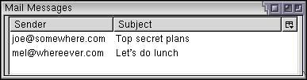

Trees
XUL provides a way to create tabular or hierarchical lists using a tree.
The Tree
One of the more complex elements in XUL is the tree. A tree may be used to display rows of text in columns. It can be used with rows either in a flat list or arranged into a hierarchy. A tree also allows the user to rearrange, resize and hide individual columns. Some examples of trees include the list of messages in a mail application, or the Bookmarks window in Mozilla.
In some ways, a tree has some similarities with the listbox. Both can be used to create tables of data with multiple rows and columns, and both may contain column headers. The tree also supports nested rows, whereas the listbox does not. However, listboxes may contain any type of content, whereas trees may only contain text and images.
A tree consists of two parts, the set of columns, and the tree body. The set of columns is defined by a number of treecol elements, one for each column. Each column will appear as a header at the top of the tree. The second part, the tree body, contains the data to appear in the tree and is created with a treechildren tag.
The tree is unique in that the body of the tree consists only of a single widget which draws all of the data in the tree. This contrasts with the listbox, where individual listitem and listcell tags are used to specify the rows in the listbox. In a tree, all of the data to be displayed is supplied by a separate object, called a tree view. When it comes time to display a cell, the tree widget will call out to this tree view to determine what to display, which in turn will be drawn by the tree. The tree is smart enough to only ask for information from the view for those rows that need to be displayed. This allows the view to be optimized such that it only needs to load the data for displayed content. For instance, a tree might have thousands of rows, yet most of them will be scrolled off the border of the tree, hidden from view. This means that the tree is scalable to any number rows without any performance problems. Of course, this is independant of the performance of the view object itself.
A tree view is an object which implements the nsITreeView interface. This interface contains thirty properties and functions which you may implement. These functions will be called by the tree as necessary to retrieve data and state about the tree. For instance, the getCellText function will be called to get the label for a particular cell in the tree.
An advantage of using a view is that it allows the view to store the data in a manner which is more suitable for the data, or to load the data on demand as rows are displayed. This allows more flexibility when using trees.
Naturally, having to implement a tree view with thirty or so properties and methods for every tree can be very cumbersome, especially for simple trees. Fortunately, XUL provides a couple of built-in view implementations which do most of the hard work for you. For most trees, especially when you first start to use trees, you will use one of these built-in types. However, you can create a view entirely from scratch if necessary. If you do, you might store the data in an array or JavaScript data structure, or load the data from an XML file.
Since the entire body of the tree is a single widget, you can't change the style of individual rows or cells in the normal way. This is because there are no elements that display the individual cells, like there is with the listbox. Instead, all drawing is done by the tree body using data supplied by the view. This is an important point and many XUL developers have trouble understanding this aspect. To modify the appearance of a tree cell, the view must instead associate a set of keywords for a row and cell. A special CSS syntax is used which styles components of the tree body with those keywords. In a sense, it is somewhat like using CSS classes. Tree styling will be discussed in detail in a later section.
Tree Elements
Trees can be created with the tree element, which is described in the following sections. There are also two elements used to define the columns to be displayed in the tree.
- treeThis is the outer element of a tree.
- treecolsThis element is a placeholder for a set of treecol elements.
- treecolThis is used to declare a column of the tree. By using this element, you can specify additional information about how the data in the columns are sorted and if the user can resize the columns. You should always place an id attribute on a column, as Mozilla uses the ids to identify the columns when rearranging and hiding them. This is no longer required in Mozilla 1.8 and later, but it is still a good idea to use ids on columns.
- treechildrenThis contains the main body of the tree where the individual rows of data will be displayed.
Here is an example of a tree with two columns:
Example 8.1.1: Source View<tree flex="1">
<treecols>
<treecol id="nameColumn" label="Name" flex="1"/>
<treecol id="addressColumn" label="Address" flex="2"/>
</treecols>
<treechildren/>
</tree>First, the entire table is surrounded with a tree element. This declares an element that is used as a table or tree. As with HTML tables, the data in a tree is always organized into rows. The columns are specified using the treecols tag.
You may place as many columns as you wish in a tree. As with listboxes, a header row will appear with column labels. A drop-down menu will appear in the upper-right corner of the tree, which the user may use to show and hide individual columns. Each column is created with a treecol element. You can set the header label using the label attribute. You may also want to make the columns flexible if your tree is flexible, so that the columns stretch as the tree does. In this example, the second column will be twice as wide as the first column. All of the columns should be placed directly inside a treecols element.
In this case we haven't specified a view to supply the tree's data, so we'll only see column headers and an empty tree body. You may have to resize the window to see anything since there isn't any data to display. Since the tree has been marked as flexible, the body will stretch to fit the available space. Making a tree flexible is quite commonly done, as it is often the case that the data in the tree is the most significant information displayed, so it makes sense to make the tree grow to fit. However, you may specify a specific number of rows to appear in a tree by setting the rows attribute on the tree element. This attribute specifies how many rows are displayed in the user interface, not how many rows of data there are. The total number of rows is supplied by the tree view. If there are more rows of data in the tree, a scrollbar will appear to allow the user to see the rest of them. If you don't specify the rows attribute, the default value is 0, which means that none of the rows will appear. In this case, you would make the tree flexible. If your tree is flexible, it doesn't need a rows attribute since it will grow to fit the available space.
The Content Tree View
Having said that the data to be displayed in a tree comes from a view and not from XUL tags, there happens to be a built-in tree view which gets its data from XUL tags. This may be a bit confusing, but essentially, one of the built-in tree views uses a set of tags which can be used to specify information about the data in the tree. The following tags are used:
- treeitemThis contains a single top level row and all its descendants. This element also serves as the item which can be selected by the user. The treeitem tag would go around the entire row so that it is selectable as a whole.
- treerowA single row in the tree, which should be placed inside a treeitem tag.
- treecellA single cell in a tree. This element would go inside a treerow element.
Conveniently, these tags may be placed directly inside the treechildren tag, nested in the order above. The tags define the data to be displayed in the tree body. In this case, the tree uses the built-in tree view, called a content tree view, which uses the labels and values specified on these elements as the data for the tree. When the tree needs to display a row, the tree asks the content tree view for a cell's label by calling the view's getCellText function, which in turn gets the data from the label of the appropriate treecell.
However, the three elements listed above are not displayed directly. They are used only as the source for the data for the view. Thus, only a handful of attributes apply to the treeitem and related elements. For instance, you cannot change the appearance of the tree rows using the style attribute or with other CSS properties and the box related features such as flexibility and orientation cannot be used.
In fact, apart from some tree specific attributes, the only attributes that will have any effect will be the label attribute to set a text label for a cell and the src attribute to set an image. However, there are special ways of styling the tree and setting other features which we will see in later sections.
Also, events do not get sent to treeitem element and their children; instead they get sent to the treechildren element.
That the treeitems are unlike other XUL elements is a common source of confusion for XUL developers. Essentially, the tree content view is a view where the data for the cells is supplied from tags placed inside the tree. Naturally, if you are using a different kind of view, the data will be supplied from another source, and there won't be any treeitem elements at all.
Let's start by looking at how to create a simple tree with multiple columns using the tree content view. This could be used to create a list of mail messages. There might be multiple columns, such as the sender and the subject.
Example 8.1.2: Source View<tree flex="1">
<treecols>
<treecol id="sender" label="Sender" flex="1"/>
<treecol id="subject" label="Subject" flex="2"/>
</treecols>
<treechildren>
<treeitem>
<treerow>
<treecell label="joe@somewhere.com"/>
<treecell label="Top secret plans"/>
</treerow>
</treeitem>
<treeitem>
<treerow>
<treecell label="mel@whereever.com"/>
<treecell label="Let's do lunch"/>
</treerow>
</treeitem>
</treechildren>
</tree> As can be seen in the image, the tree has been created with two rows of data.
This tree has two columns, the second of which will take up more space than the first. You will usually make the columns flexible. You can also supply widths with the width attribute. You should include the same number of treecol elements as there are columns in the tree. Otherwise strange things might happen.
The header row is created automatically. The button in the upper right corner can be used to hide and show the columns. You can place a hidecolumnpicker attribute on the tree and set it to true if you would like to hide this button. If this button is hidden, the user will not be able to hide columns.
Make sure that you set an id attribute on each column or the hiding and showing of columns will not work in all versions of Mozilla.
The treechildren element surrounds all of the rows. Inside the body are individual rows, which may in turn contain other rows. For a simpler tree, each row is created with the treeitem and treerow elements. The treerow element surrounds all of the cells in a single row, while a treeitem element would surround a row and all of its children. Trees with nested rows are described in the next section.
Inside the rows, you will put individual tree cells. These are created using the treecell element. You can set the text for the cell using the label attribute. The first treecell in a row determines the content that will appear in the first column, the second treecell determines the content that will appear in the second column, and so on.
The user can select the treeitems by clicking on them with the mouse, or by highlighting them with the keyboard. The user can select multiple items by holding down the Shift or Control keys and clicking additional rows. To disable multiple selection, place a seltype attribute on the tree, set to the value single. With this, the user may only select a single row at a time.
Tree Example
Let's add a tree to the find files window where the results of the search would be displayed. The tree will use a content tree view. The following code should be added in place of the iframe.
<tree flex="1">
<treecols>
<treecol id="name" label="Filename" flex="1"/>
<treecol id="location" label="Location" flex="2"/>
<treecol id="size" label="Size" flex="1"/>
</treecols>
<treechildren>
<treeitem>
<treerow>
<treecell label="mozilla"/>
<treecell label="/usr/local"/>
<treecell label="2520 bytes"/>
</treerow>
</treeitem>
</treechildren>
</tree>
<splitter collapse="before" resizeafter="grow"/>We've added a tree with three columns for the filename, the location and the file size. The second column will appear twice as wide due to the larger flexibility. A single row has been added to demonstrate what the table would look like with a row. In a real implementation, the rows would be added by a script as the search was performed, or a custom view would be created to hold the data.
(Next) Next, we'll learn how to create more advanced trees.